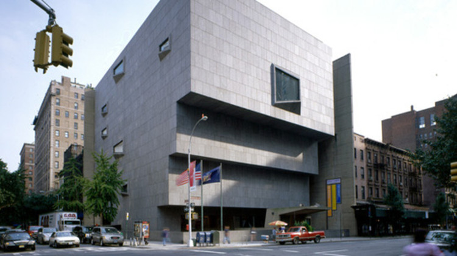
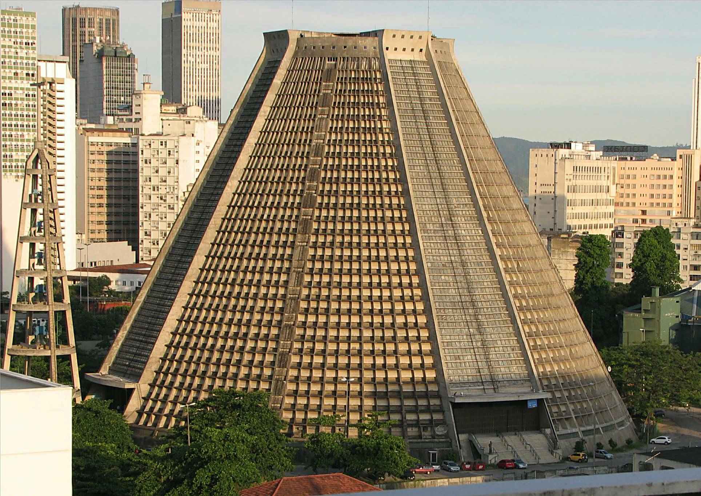
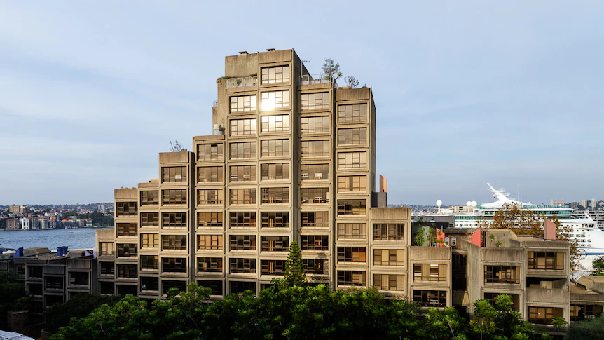
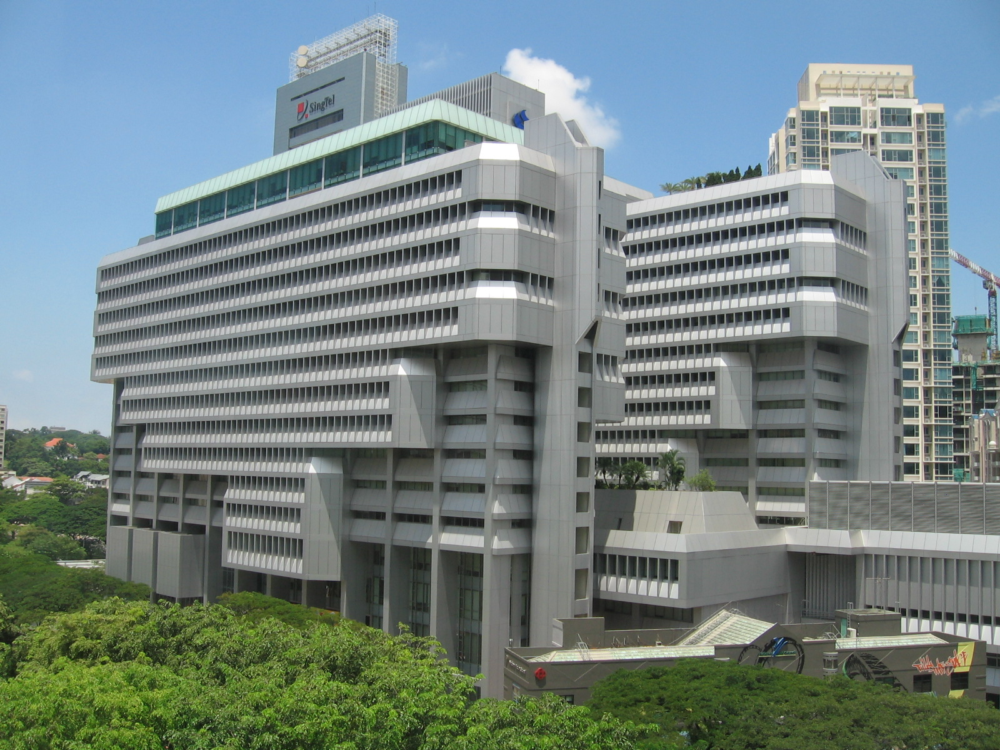
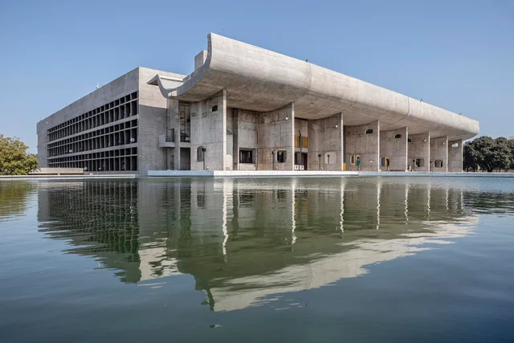

The Geisel Library, Located in San Diego, California, USA
Designed by William Pereira
Opening in 1970.

The Domus Habitat 67, Located in Montreal, Canada
Designed by Moshe Safdie
Opening in 1967.

Boston City Hall, Located in Boston, Massachusetts, USA
Designed by Kallmann McKinnell & Knowles Campbell, Aldrich & Nulty
Opening in 1968.

The Breuer Building, Located in Upper East Side, Manhattan, New
York, USA
Designed by Marcel Breuer
Opening in 1966.

Catedral Metropolitana de São Sebastião, Located in Rio De Janeiro,
Brasil
Designed by Edgar de Oliveira da Fonseca
Opening in 1976.

The Maüsebunker, Located in Berlin , Germany
Designed by Gerd Hänska
Opening in 1981.

Torre Velasca, Located in Milan, Italy
Designed by Ernesto Nathan Rogers, Gian Luigi Banfi, Enrico
Peressutti, Lodovico Barbiano di Belgiojoso
Opening in 1958.

Wotrubakirche, Located in Vienna, Austria
Designed by Fritz Wotruba
Opening in 1976.

The School of Molecular Bioscience and Biochemistry, Located in
Sydney, Australia
Designed by Stafford Moor
Opening in 1973.

The Sirius Building, Located in Sydney, Australia
Designed by Theodorus Tao Gofers
Opening in 1979.

The Power Building, Located in Orchard, Singapore
Designed by PUB
Opening in 1971.

The Palace of Assembly, Located in Chandigarh, India
Designed by Le Corbusier
Opening in 1962.

The Kenyatta International convention center, Located in Nairobi,
Kenya
Designed by Karl Henrik Nøstvik
Opening in 1973.